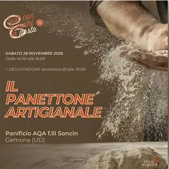

sab 28 nov · dalle 14:00
Tutti con le mani in pasta - Il panettone artiginale
Ogni anno, a novembre, Tutti con le mani in pasta invita i consumatori a entrare nei laboratori dei soci di Etica del Gusto per vivere da vicino l’arte della panificazione, della pasticceria, della gelateria e della cioccolateria artigianale. Un’occasione per conoscere i…
 Indicazioni
Indicazioni
- Costi e prenotazioni
- Costo non indicato · Prenotazione non indicata
- Programma
- Programma da verificare. Apri la fonte ufficiale per orari e possibili aggiornamenti.
- In caso di maltempo
- Nessuna indicazione specifica pubblicata.
- Note
- Acquisito automaticamente dalla fonte.
L’EVENTO
Descrizione completa
Un panettone che lievita a suon di musica! Da Aqa, due giornate tra mani in pasta e una golosa colazione natalizia. Un artigiano, a volte, viene definito anche artista: per il modo in cui riesce a trasformare la materia che ha davanti agli occhi, tra colori, abbinamenti, profumi e sapori. Un’esplosione di sensazioni che nasce dalle mani, dalla tecnica, ma soprattutto dalla passione. Ma c’è qualcosa ancora di più speciale. Al panificio Aqa di Osoppo, Luca Soncin , titolare del forno insieme a suo zio Mauro, oltre ad essere un artigiano è anche un musicista. Ed è proprio qui che nasce un’esperienza fuori dall’ordinario: un percorso per entrare nel mondo del Panettone . Un’esperienza strutturata su due giornate, immersi tra impasti, lievitazioni, cotture e musica. Avrete la possibilità di scoprire e toccare con mano le materie prime, conoscere i passaggi che trasformano semplici ingredienti in uno dei dolci simbolo del Natale e provare con le vostre mani cosa significa pirlare un impasto. Lo vedrete prendere forma, lievitare, crescere e infine entrare nel forno, dove il tempo e il calore faranno la loro parte. Il secondo giorno, ci sarà il momento della condivisione: una colazione conviviale natalizia , per assaggiare insieme il risultato, confrontarsi, raccontare sensazioni e scoprire il Panettone attraverso il gusto. Qual è il segreto del panettone del panificio Aqa? Un gesto semplice, quasi fanciullesco, che forse più di ogni tecnica racconta chi è Luca. Dietro gli importanti riconoscimenti ottenuti dal suo Panettone, infatti, c’è un ingrediente che non si misura e non si pesa: l’ amore Ogni notte, Luca porta una sedia in laboratorio e si siede accanto ai suoi impasti. Prende la chitarra e inizia a suonare e cantare. Proprio come si fa quando si aspetta una nuova vita. Può sembrare un gesto curioso, forse un po’ folle. Ma quando la passione incontra la cura, anche un impasto può diventare qualcosa di più. Iscrizione al seguente link
IL PROGRAMMA
Programma e orari
Appuntamenti raccolti dalle fonti elencate. Dove manca un orario, non è ancora disponibile in questa scheda.
Programma pubblicato
- Dal 2026-11-28 al 2026-11-28
INFORMAZIONI UTILI
Prima di partire
- Controllare la fonte prima di partire.
ORGANIZZAZIONE